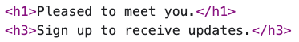

Do California lawmakers obey their own laws?
Inspecting Assembly members’ web pages
Summary
A new analysis reveals wide variation in conformity to web-accessibility standards by members of the California Assembly, both on their official Assembly web pages and on the home pages of their political campaign websites. This finding contrasts with California statutes and regulations mandating that government websites be designed and built inclusively.
Introduction
California legislators on their websites claim that they fight to help people who need help. People with disabilities fall into that category. California statutes and regulations require government websites (and other communications) to be designed and built so people with disabilities can benefit from them.
Concretely, this means that websites must conform to web accessibility standards. These standards ensure that websites avoid imposing user-unfriendly barriers that are annoying for most of us, but especially onerous for people with disabilities—such as tiny or faint text, disappearing information, confusing error messages, widgets that require precise control of a mouse, deadlines forcing users to act quickly, or motions that could provoke nausea or seizures.
Methods for making websites accessible are well known and widely agreed on. Website developers have access to documentation, training, and tools to ensure that the sites they build are accessible.
If legislators want their own websites to be accessible, they can insist on that when they have their sites designed. But do they?
Findings
In June 2023 I performed automated accessibility tests on official and campaign web pages of members of the California Assembly. The tests produced detailed reports of accessibility problems, and I aggregated the results into a total accessibility score for each page. The results are shown below. Members’ political party affiliations are shown in parentheses (D = Democratic, R = Republican).
To visit the web pages themselves, you can click their names. To read the detailed reports, you can click the scores.
Discussion
Ten different testing tools were used, and in combination they conducted about 1350 tests.
Although the tests ware developed by accessibility specialists, they still reflect subjective judgment and can make mistakes, so it is prudent to treat the scores as only approximate indicators of over-all accessibility. The detailed reports, however, catalog hundreds of accessibility issues meriting investigation.
The median score of Democrats, 1350, was better than the median score of Republicans, 1508. The median score of official pages, 1307, was better than the median score of campaign pages, 1518. But these differences pale in comparison to the range of scores, from 355 for the campaign page of Lisa Calderon to 9936 for the campaign page of Wendy Carrillo.
Even the best-scoring page has some accessibility flaws. Lisa Calderon’s campaign page contains a Skip to content
link at the top, which is designed for users who cannot use a mouse, so they can press the Tab key and get straight into the page content. But that link is useless, because it takes you to the navigation bar that it is intended to skip over. The page also contains a Donate
button that endlessly pulsates if you press the Tab key a few times; this could disorient visitors with attention limitations or vestibular disorders. The issues page on the site contains gray text on a white background that falls below the minimum standard for foreground-background contrast.
On the other end of the table, Wendy Carrillo’s campaign home page contains three large blocks that automatically rotate among several images, and you cannot stop this movement. If you navigate with a keyboard, the page is confusing. It pops up a donation form that makes it difficult to see how to donate or to close the form without using a mouse. The Escape key should close the form, but it does not. After you close the form, your next press of the Tab key takes you entirely out of the page, instead of into it. To reach the navigation bar at the top, you need to press the Tab key with the Shift key (i.e. navigate backwards) dozens of times. The page also contains a SUPPORT WENDY
button whose text disappears when you hover over it with a mouse, so a distracted visitor could click it by mistake.

In the middle, the Assembly member page of Brian Maienschein has misleading heading codes and navigation barriers. Heading codes are invisible, but they help people with vision and other disabilities understand how the page is organized and navigate successfully. The top heading code, h1, should be the member’s name, because this page is about him. Instead, his name is coded as a link that uselessly goes to this same page, and an h1 code is attached to the sentence Pleased to meet you
, which is not a heading. That h1 code is immediately followed by an h3 code, which is illogical, and that h3 is attached to Sign up to receive updates
, which, likewise, is not a heading. The page also contains a navigation bar at the top, but you can’t get to it without a mouse, so most of the site is off-limits to people who use a keyboard to navigate.

Members Carrillo and Maienschein both introduced bills in February 2023 to tighten the rules for making website accessibility claims. But the Carrillo bill would require telling businesses that Compliance with disability access laws is a serious and significant responsibility that applies to all California business owners with places of public accommodation
, and the Maienschein bill would make it illegal for a website development contractor to build an inaccessible website for a customer.
Thus, website accessibility is a political issue for some members of the Assembly, but for them and all other members it is also a feasible achievement they cannot yet claim.